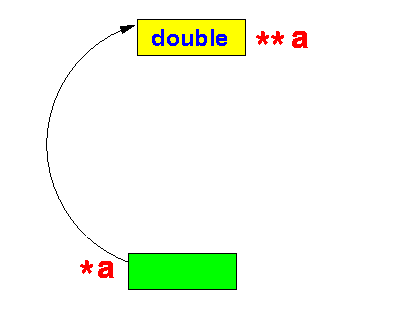
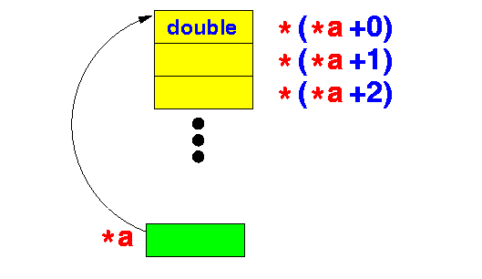
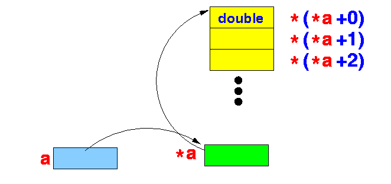
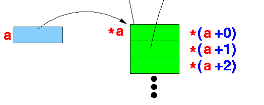
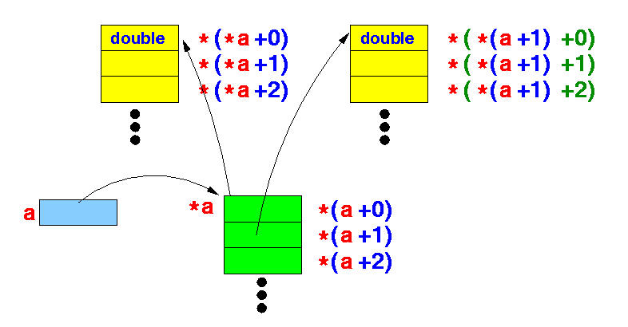
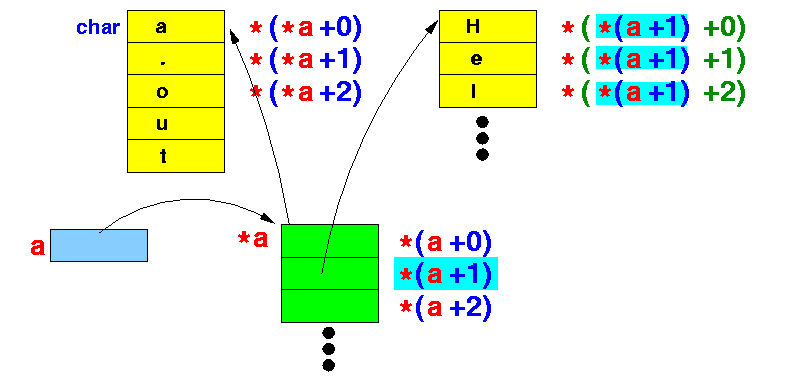

- The arguments of
the main() function is
as follows:
int main( int argc, char *argv[] ) { .... }
- The data type of the
arguments are:
- argc is an
integer
- argv is an array of Strings !!!! (explained next)
- argc is an
integer
- Explanation: how to
read the
definition char *x[ ]
char *x[ ] is the declaration of a variable that was defined as: char *x[ N ] Let's analyze this definition step by step: char x ; // x is a char variable char *x; // *x is a char variable // ==> x is a reference to a char variable // ("char *" is also the type of a string !) char *x[10]; // x is an array of 10 reference variables // -- each variable x[i] is a ref. to a char var. // ==> x is an array of strings !!!
- Example 1: printing out the
arguments
#include <stdio.h> int main(int argc, char *argv[]) { int i; for ( i = 0; i < argc; i++ ) printf("argv[%d] = %s\n", i, argv[i] ); }Sample output:
a.out lkls kdlask l daskldsa argv[0] = a.out argv[1] = lkls argv[2] = kdlask argv[3] = l argv[4] = daskldsa
- Example Program:
(Demo above code)

- Prog file: click here
How to run the program:
- Right click on link(s) and
save in a scratch directory
- To compile: gcc args1.c
- To run: ./a.out
- Example 2: sum the
(integer) arguments
#include <stdio.h> int main(int argc, char *argv[]) { int i, s, n; s = 0; for ( i = 1; i < argc; i++ ) { n = atoi( argv[i] ) ; // convert string (ASCII code) to int code s = s + n; printf("s = %d\n", s); } printf("\nFinal s = %d\n", s); }Sample output:
a.out 1 2 3 4 5 6 s = 1 s = 3 s = 6 s = 10 s = 15 s = 21 Final s = 21
- Example Program:
(Demo above code)
- Prog file: click here
How to run the program:
- Right click on link(s) and
save in a scratch directory
- To compile: gcc args1.c
- To run: ./a.out
- Recall:
- In the definition
double a[10];
the data type of the variable a is:
double *a ; // a is equal to &a[0] // and &a[0] is a "double *"
- In the definition
- Therefore:
- In the definition
char a[10];
the data type of the variable a is:
char *a ; // a is equal to &a[0] // and &a[0] is a "char *"
- In the definition
- Previously (first part of this webpage), we saw that an
array of string is defined as:
char *s[10] ; // s = array of 10 pointers to string variablesUsing the notation explained above, we have:
- In the definition
char *a[10];
the data type of the variable a is:
char **a ; // !!!!!
- In the definition
- Example 1 revisited: printing out the
arguments
#include <stdio.h> int main(int argc, char **argv ) { int i; for ( i = 0; i < argc; i++ ) printf("argv[%d] = %s\n", i, argv[i] ); }Sample output:
a.out lkls kdlask l daskldsa argv[0] = a.out argv[1] = lkls argv[2] = kdlask argv[3] = l argv[4] = daskldsa
- Example Program:
(Demo above code)
- Prog file: click here
How to run the program:
- Right click on link(s) and
save in a scratch directory
- To compile: gcc args3.c
- To run: ./a.out
- How to read it:
- The expression
**a is
a double typed variable:
- Therefore,
the expression
*a is
a pointer (reference) variable
to double typed variable:
 Furthermore, we can apply pointer arithmetic on *a:
* ( *a + 0 ) * ( *a + 1 ) ....to access consecutive double typed variables starting at *a:

- Finally,
the expression
a is
a pointer (reference) to
a pointer (reference) variable
to double typed variable:
 Furthermore, we can apply pointer arithmetic on a:
* ( a + 0 ) * ( a + 1 ) ....to access consecutive double * typed variables starting at a:
 Each of the variable *(a + i) points to an array of double variables:

- The expression
**a is
a double typed variable:
- If we replace
the double type in
the above example, we will get the
data type of
the array of string
argument in
main():

- Example:
int main(int argc, char **a ) { printf("First 4 chars of arg 0: "); putchar( * ( *(a + 0) + 0 ) ); putchar( * ( *(a + 0) + 1 ) ); putchar( * ( *(a + 0) + 2 ) ); putchar( * ( *(a + 0) + 3 ) ); putchar( '\n' ); printf("First 4 chars of arg 1: "); putchar( * ( *(a + 1) + 0 ) ); putchar( * ( *(a + 1) + 1 ) ); putchar( * ( *(a + 1) + 2 ) ); putchar( * ( *(a + 1) + 3 ) ); putchar( '\n' ); printf("First 4 chars of arg 2: "); putchar( * ( *(a + 2) + 0 ) ); putchar( * ( *(a + 2) + 1 ) ); putchar( * ( *(a + 2) + 2 ) ); putchar( * ( *(a + 2) + 3 ) ); putchar( '\n' ); }Sample output:
a.out Hello World First 4 chars of arg 0: a.ou First 4 chars of arg 1: Hell First 4 chars of arg 2: Worl
- Example Program:
(Demo above code)
- Prog file: click here
How to run the program:
- Right click on link(s) and
save in a scratch directory
- To compile: gcc args4.c
- To run: ./a.out
- Fact:
*( p + i ) ≡ p[i]Simplify:
* ( *(a + i) + j ) ≡ * ( a[i] + j ) // Look at a[i] as ONE SINGLE variable ≡ a[i][j]
- Example:
int main(int argc, char **a ) { if ( argc < 3 ) { printf("Needs 2 arguments !\n"); exit(1); } printf("First 4 chars of arg 0: "); putchar( * ( a[0] + 0 ) ); putchar( * ( a[0] + 1 ) ); putchar( * ( a[0] + 2 ) ); putchar( * ( a[0] + 3 ) ); putchar( '\n' ); printf("First 4 chars of arg 0: "); putchar( a[0][0] ); putchar( a[0][1] ); putchar( a[0][2] ); putchar( a[0][3] ); putchar( '\n' ); printf("First 4 chars of arg 1: "); putchar( a[1][0] ); putchar( a[1][1] ); putchar( a[1][2] ); putchar( a[1][3] ); putchar( '\n' ); .... }
- Example Program:
(Demo above code)
- Prog file: click here
How to run the program:
- Right click on link and
save in a scratch directory
- To compile: gcc args5.c
- To run: ./a.out
- Caveat:
- You have now
seen on
2 occasions
the following
expression:
a[i][j]
- The C compiler will
translate the following
expression:
a[i][j]differently depending on the way the variable a is defined:
DataType a[M][N]; or: DataType **a;
- If a is
defined as
DataType a[M][N],
the expression
a[i][j] will
access the
memory location:
a + (i*N + j)*sizeof(DataType)
- If a is
defined as
DataType a[M][N],
the expression
DataType **a will
access the
*a[i] first
using the follow
address:
help = a + i*sizeof(address)Then access *help[j] using the follow address:
help + i*sizeof(DataType)
- You have now
seen on
2 occasions
the following
expression:
- Example:
char a[3][4]; char **b; int main(int argc, char **argv ) { a[2][3] = 'a'; b[2][3] = 'a'; }Compile with: gcc -S args6.s and examine the assembler output:
(%rip is the Intel register that points to the data segment) a[2][3] = 'a': movb $97, a+11(%rip) // 'a' = ASCII 97 // Access the addres a + 11 // Notice: 11 = 2*4 + 3 // I.e.: a[2][3] = 97 ('a') b[2][3] = 'a': movq b(%rip), %rax addq $16, %rax // b + 2*8 (64 bit machine) movq (%rax), %rax // %rax = *b[2] (what I called help) addq $3, %rax // Address help + 3 movb $97, (%rax) // *help[3] = 'a'
- Example Program:
(Demo above code)
- Prog file: click here
How to run the program:
- Right click on link and
save in a scratch directory
- To compile: gcc -S args.c
- Examine output file args6.s.